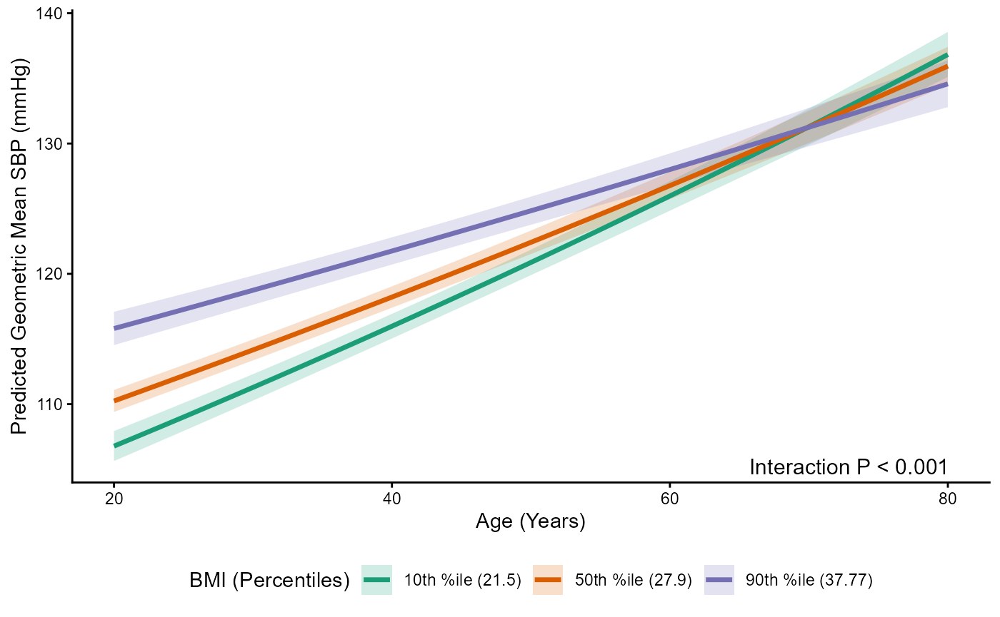

Analyzing Interaction Effects with svyTable1
Source:vignettes/v3-interaction-analysis.Rmd
v3-interaction-analysis.Rmd
knitr::opts_chunk$set(
collapse = TRUE,
comment = "#>"
)This vignette demonstrates how to analyze and present interaction
effects using the svyTable1 package. This includes:
- Calculating measures of additive interaction
(
addintlist()) - Estimating joint and simple effects (
jointeffects(),inteffects()) - Generating automated multi-panel reports
(
reportint()) - Visualizing interactions involving continuous variables
(
plotint())
We will use NHANES data to explore these functions.
Analyzing Interaction Effects (Categorical)
The svyTable1 package includes several functions to help
analyze and present interaction effects between two categorical
variables in survey-weighted regression models (svyglm or
svycoxph). These functions facilitate demonstrating the
equivalence of different modeling approaches and calculating measures of
additive interaction.
Example: Interaction between Race and Obesity on Hypertension (NHANES)
For two categorical variables, svyTable1 provides
functions that summarize joint, simple, and additive interaction effects
from survey-weighted logistic or Cox models. These summaries help
demonstrate the connection between the saturated interaction model and
the equivalent joint-indicator model.
1. Data Preparation and Model Fitting
library(svyTable1)
library(survey)
library(dplyr)
library(NHANES)
library(knitr)
library(tidyr)
library(emmeans)
library(ggplot2)The example uses NHANES data to examine whether the association between obesity and hypertension differs by race. A survey-weighted logistic model with an interaction term is fitted, and a matched joint-indicator model is created to demonstrate equivalence.
data(NHANESraw)
vars_needed <- c("Age", "Race1", "BPSysAve", "BMI", "ObeseStatus", "Hypertension_130",
"SDMVPSU", "SDMVSTRA", "WTMEC2YR")
nhanes_adults_processed <- NHANESraw %>%
filter(Age >= 20) %>%
mutate(
ObeseStatus = factor(ifelse(BMI >= 30, "Obese", "Not Obese"),
levels = c("Not Obese", "Obese")),
Hypertension_130 = factor(ifelse(BPSysAve >= 130, "Yes", "No"),
levels = c("No", "Yes")),
Race1 = relevel(as.factor(Race1), ref = "White")
) %>%
select(all_of(vars_needed)) %>%
drop_na()
adult_design_binary <- svydesign(
id = ~SDMVPSU,
strata = ~SDMVSTRA,
weights = ~WTMEC2YR,
nest = TRUE,
data = nhanes_adults_processed
)
interaction_model_logit <- svyglm(
Hypertension_130 ~ Race1 * ObeseStatus + Age,
design = adult_design_binary,
family = quasibinomial()
)
adult_design_binary <- update(adult_design_binary,
Race1_ObeseStatus = interaction(Race1, ObeseStatus, sep = "_", drop = TRUE)
)
adult_design_binary <- update(adult_design_binary,
Race1_ObeseStatus = relevel(Race1_ObeseStatus, ref = "White_Not Obese")
)
joint_model_logit <- svyglm(
Hypertension_130 ~ Race1_ObeseStatus + Age,
design = adult_design_binary,
family = quasibinomial()
)
f1_levels <- levels(adult_design_binary$variables$Race1)
f2_levels <- levels(adult_design_binary$variables$ObeseStatus)2. Additive Interaction Measures
addintlist() computes standard measures of additive
interaction. These include:
RERI (relative excess risk due to interaction)
AP (attributable proportion due to interaction)
S (synergy index)
These measures quantify departure from additivity on the ratio scale and help assess whether the joint effect of two exposures exceeds what would be expected from independent effects.
all_interactions_table <- addintlist(
model = interaction_model_logit,
factor1_name = "Race1",
factor2_name = "ObeseStatus",
measures = "all",
digits = 3
)
#> Calculating for: Race1_Black_vs_ObeseStatus_Obese
#> Calculating for: Race1_Hispanic_vs_ObeseStatus_Obese
#> Calculating for: Race1_Mexican_vs_ObeseStatus_Obese
#> Calculating for: Race1_Other_vs_ObeseStatus_Obese
knitr::kable(all_interactions_table,
caption = "Additive Interaction Measures (RERI, AP, S) for Race x Obesity on Hypertension",
digits = 3)| Factor1 | Level1 | Factor2 | Level2 | Measure | Estimate | SE | CI_low | CI_upp |
|---|---|---|---|---|---|---|---|---|
| Race1 | Black | ObeseStatus | Obese | RERI | 0.025 | 0.312 | -0.587 | 0.637 |
| Race1 | Black | ObeseStatus | Obese | AP | 0.010 | 0.122 | -0.230 | 0.250 |
| Race1 | Black | ObeseStatus | Obese | S | 1.016 | 0.205 | 0.680 | 1.518 |
| Race1 | Hispanic | ObeseStatus | Obese | RERI | 0.258 | 0.194 | -0.123 | 0.639 |
| Race1 | Hispanic | ObeseStatus | Obese | AP | 0.157 | 0.105 | -0.048 | 0.362 |
| Race1 | Hispanic | ObeseStatus | Obese | S | 1.667 | 0.382 | 0.788 | 3.525 |
| Race1 | Mexican | ObeseStatus | Obese | RERI | 0.360 | 0.253 | -0.136 | 0.857 |
| Race1 | Mexican | ObeseStatus | Obese | AP | 0.187 | 0.116 | -0.041 | 0.415 |
| Race1 | Mexican | ObeseStatus | Obese | S | 1.639 | 0.348 | 0.829 | 3.241 |
| Race1 | Other | ObeseStatus | Obese | RERI | -0.299 | 0.305 | -0.896 | 0.299 |
| Race1 | Other | ObeseStatus | Obese | AP | -0.259 | 0.316 | -0.878 | 0.360 |
| Race1 | Other | ObeseStatus | Obese | S | 0.337 | 1.758 | 0.011 | 10.567 |
3. Joint Effects
jointeffects() estimates the combined effect for each
combination of the two categorical variables. The function reports
effects on either the ratio scale or the log scale and is useful for
reporting the full pattern of interaction across subgroups.
joint_effects_ratio <- jointeffects(
interaction_model = interaction_model_logit,
factor1_name = "Race1",
factor2_name = "ObeseStatus",
scale = "ratio",
digits = 2)
knitr::kable(joint_effects_ratio,
caption = "Joint Effects (OR Scale) Estimated from Interaction Model",
digits = 2)| Level1 | Level2 | Estimate | SE | CI.low | CI.upp |
|---|---|---|---|---|---|
| White | Not Obese | 1.00 | 0.00 | 1.00 | 1.00 |
| Black | Not Obese | 2.11 | 0.21 | 1.73 | 2.58 |
| Hispanic | Not Obese | 0.99 | 0.12 | 0.77 | 1.27 |
| Mexican | Not Obese | 1.17 | 0.12 | 0.95 | 1.43 |
| Other | Not Obese | 1.05 | 0.10 | 0.87 | 1.28 |
| White | Obese | 1.40 | 0.10 | 1.21 | 1.61 |
| Black | Obese | 2.53 | 0.32 | 1.98 | 3.24 |
| Hispanic | Obese | 1.65 | 0.22 | 1.27 | 2.13 |
| Mexican | Obese | 1.92 | 0.21 | 1.55 | 2.39 |
| Other | Obese | 1.15 | 0.26 | 0.74 | 1.80 |
joint_effects_log <- jointeffects(
interaction_model = interaction_model_logit,
factor1_name = "Race1",
factor2_name = "ObeseStatus",
scale = "log",
digits = 3)
knitr::kable(joint_effects_log,
caption = "Joint Effects (Log-OR Scale) Estimated from Interaction Model",
digits = 3)| Level1 | Level2 | Estimate | SE | CI.low | CI.upp |
|---|---|---|---|---|---|
| White | Not Obese | 0.000 | 0.000 | 0.000 | 0.000 |
| Black | Not Obese | 0.748 | 0.101 | 0.550 | 0.946 |
| Hispanic | Not Obese | -0.010 | 0.125 | -0.255 | 0.235 |
| Mexican | Not Obese | 0.154 | 0.104 | -0.049 | 0.358 |
| Other | Not Obese | 0.052 | 0.098 | -0.141 | 0.244 |
| White | Obese | 0.335 | 0.073 | 0.191 | 0.478 |
| Black | Obese | 0.930 | 0.125 | 0.685 | 1.175 |
| Hispanic | Obese | 0.498 | 0.132 | 0.240 | 0.756 |
| Mexican | Obese | 0.655 | 0.112 | 0.436 | 0.873 |
| Other | Obese | 0.141 | 0.229 | -0.308 | 0.590 |
4. Simple Effects
inteffects() provides stratum-specific effects. For
example, it reports the effect of obesity within each racial group and
the effect of race within each obesity category. This helps identify
which group-specific comparisons drive the interaction.
simple_effects_ratio <- inteffects(
joint_model = joint_model_logit,
joint_var_name = "Race1_ObeseStatus",
factor1_name = "Race1",
factor2_name = "ObeseStatus",
factor1_levels = f1_levels,
factor2_levels = f2_levels,
level_separator = "_",
scale = "ratio",
digits = 2)
knitr::kable(simple_effects_ratio,
caption = "Simple Effects (OR Scale) Estimated from Joint Model",
digits = 2)| Comparison | Estimate | SE | CI.low | CI.upp | p-value |
|---|---|---|---|---|---|
| ObeseStatus(Obese vs Not Obese): Race1(White) | 1.40 | 0.10 | 1.21 | 1.61 | 0.00 |
| ObeseStatus(Obese vs Not Obese): Race1(Black) | 1.20 | 0.14 | 0.95 | 1.52 | 0.13 |
| ObeseStatus(Obese vs Not Obese): Race1(Hispanic) | 1.66 | 0.24 | 1.25 | 2.20 | 0.00 |
| ObeseStatus(Obese vs Not Obese): Race1(Mexican) | 1.65 | 0.20 | 1.30 | 2.10 | 0.00 |
| ObeseStatus(Obese vs Not Obese): Race1(Other) | 1.09 | 0.27 | 0.68 | 1.77 | 0.72 |
| Race1(Black vs White): ObeseStatus(Not Obese) | 2.11 | 0.21 | 1.73 | 2.58 | 0.00 |
| Race1(Hispanic vs White): ObeseStatus(Not Obese) | 0.99 | 0.12 | 0.77 | 1.27 | 0.94 |
| Race1(Mexican vs White): ObeseStatus(Not Obese) | 1.17 | 0.12 | 0.95 | 1.43 | 0.14 |
| Race1(Other vs White): ObeseStatus(Not Obese) | 1.05 | 0.10 | 0.87 | 1.28 | 0.60 |
| Race1(Black vs White): ObeseStatus(Obese) | 1.81 | 0.23 | 1.41 | 2.33 | 0.00 |
| Race1(Hispanic vs White): ObeseStatus(Obese) | 1.18 | 0.15 | 0.92 | 1.51 | 0.20 |
| Race1(Mexican vs White): ObeseStatus(Obese) | 1.38 | 0.20 | 1.03 | 1.84 | 0.03 |
| Race1(Other vs White): ObeseStatus(Obese) | 0.82 | 0.19 | 0.52 | 1.31 | 0.41 |
simple_effects_log <- inteffects(
joint_model = joint_model_logit,
joint_var_name = "Race1_ObeseStatus",
factor1_name = "Race1",
factor2_name = "ObeseStatus",
factor1_levels = f1_levels,
factor2_levels = f2_levels,
level_separator = "_",
scale = "log",
digits = 3)
knitr::kable(simple_effects_log,
caption = "Simple Effects (Log-OR Scale) Estimated from Joint Model",
digits = 3)| Comparison | Estimate | SE | CI.low | CI.upp | p-value |
|---|---|---|---|---|---|
| ObeseStatus(Obese vs Not Obese): Race1(White) | 0.335 | 0.073 | 0.191 | 0.478 | 0.000 |
| ObeseStatus(Obese vs Not Obese): Race1(Black) | 0.182 | 0.120 | -0.054 | 0.418 | 0.130 |
| ObeseStatus(Obese vs Not Obese): Race1(Hispanic) | 0.508 | 0.144 | 0.227 | 0.789 | 0.000 |
| ObeseStatus(Obese vs Not Obese): Race1(Mexican) | 0.500 | 0.122 | 0.261 | 0.740 | 0.000 |
| ObeseStatus(Obese vs Not Obese): Race1(Other) | 0.090 | 0.246 | -0.392 | 0.571 | 0.715 |
| Race1(Black vs White): ObeseStatus(Not Obese) | 0.748 | 0.101 | 0.550 | 0.946 | 0.000 |
| Race1(Hispanic vs White): ObeseStatus(Not Obese) | -0.010 | 0.125 | -0.255 | 0.235 | 0.937 |
| Race1(Mexican vs White): ObeseStatus(Not Obese) | 0.154 | 0.104 | -0.049 | 0.358 | 0.137 |
| Race1(Other vs White): ObeseStatus(Not Obese) | 0.052 | 0.098 | -0.141 | 0.244 | 0.600 |
| Race1(Black vs White): ObeseStatus(Obese) | 0.595 | 0.129 | 0.343 | 0.848 | 0.000 |
| Race1(Hispanic vs White): ObeseStatus(Obese) | 0.164 | 0.127 | -0.084 | 0.412 | 0.196 |
| Race1(Mexican vs White): ObeseStatus(Obese) | 0.320 | 0.147 | 0.032 | 0.608 | 0.030 |
| Race1(Other vs White): ObeseStatus(Obese) | -0.193 | 0.237 | -0.657 | 0.270 | 0.414 |
5. Automated Multi-Panel Report
reportint() compiles the results into a structured
multi-panel summary that includes:
- joint effects
- simple effects
- additive interaction measures
- multiplicative interaction estimates
- model details
interaction_report <- reportint(
interaction_model = interaction_model_logit,
output = "list"
)
#> Variable Units Coefficient CI.95 p-value
#> Age 0.06 (0.05, 0.06) <0.01
#> Race1(White): ObeseStatus(Obese vs Not Obese) 0.33 (0.19, 0.48) <0.01
#> Race1(Black): ObeseStatus(Obese vs Not Obese) 0.18 (-0.05, 0.42) 0.13
#> Race1(Hispanic): ObeseStatus(Obese vs Not Obese) 0.51 (0.23, 0.79) <0.01
#> Race1(Mexican): ObeseStatus(Obese vs Not Obese) 0.50 (0.26, 0.74) <0.01
#> Race1(Other): ObeseStatus(Obese vs Not Obese) 0.09 (-0.39, 0.57) 0.72
#> ObeseStatus(Not Obese): Race1(Black vs White) 0.75 (0.55, 0.95) <0.01
#> ObeseStatus(Not Obese): Race1(Hispanic vs White) -0.01 (-0.26, 0.24) 0.94
#> ObeseStatus(Not Obese): Race1(Mexican vs White) 0.15 (-0.05, 0.36) 0.14
#> ObeseStatus(Not Obese): Race1(Other vs White) 0.05 (-0.14, 0.24) 0.60
#> ObeseStatus(Obese): Race1(Black vs White) 0.60 (0.34, 0.85) <0.01
#> ObeseStatus(Obese): Race1(Hispanic vs White) 0.16 (-0.08, 0.41) 0.20
#> ObeseStatus(Obese): Race1(Mexican vs White) 0.32 (0.03, 0.61) 0.03
#> ObeseStatus(Obese): Race1(Other vs White) -0.19 (-0.66, 0.27) 0.41
#> Calculating for: Race1_Black_vs_ObeseStatus_Obese
#> Calculating for: Race1_Hispanic_vs_ObeseStatus_Obese
#> Calculating for: Race1_Mexican_vs_ObeseStatus_Obese
#> Calculating for: Race1_Other_vs_ObeseStatus_Obese
knitr::kable(interaction_report$joint_effects,
caption = "Panel A (Joint Effects) from reportint()")| Race1 | ObeseStatus | OR | 95% CI | p |
|---|---|---|---|---|
| White | Not Obese | 1.00 | (Reference) | - |
| Black | Not Obese | 2.11 | [1.73, 2.58] | < 1e-04 |
| Hispanic | Not Obese | 0.99 | [0.77, 1.27] | 0.937 |
| Mexican | Not Obese | 1.17 | [0.95, 1.43] | 0.137 |
| Other | Not Obese | 1.05 | [0.87, 1.28] | 0.600 |
| White | Obese | 1.40 | [1.21, 1.61] | < 1e-04 |
| Black | Obese | 2.53 | [1.98, 3.24] | < 1e-04 |
| Hispanic | Obese | 1.65 | [1.27, 2.13] | 0.000152 |
| Mexican | Obese | 1.92 | [1.55, 2.39] | < 1e-04 |
| Other | Obese | 1.15 | [0.74, 1.80] | 0.538 |
knitr::kable(interaction_report$stratum_specific_effects,
caption = "Panel B (Simple Effects) from reportint()")| Comparison | Estimate | 95% CI | p |
|---|---|---|---|
| Race1(White): ObeseStatus(Obese vs Not Obese) | 0.33 | (0.19, 0.48) | <0.01 |
| Race1(Black): ObeseStatus(Obese vs Not Obese) | 0.18 | (-0.05, 0.42) | 0.13 |
| Race1(Hispanic): ObeseStatus(Obese vs Not Obese) | 0.51 | (0.23, 0.79) | <0.01 |
| Race1(Mexican): ObeseStatus(Obese vs Not Obese) | 0.50 | (0.26, 0.74) | <0.01 |
| Race1(Other): ObeseStatus(Obese vs Not Obese) | 0.09 | (-0.39, 0.57) | 0.72 |
| ObeseStatus(Not Obese): Race1(Black vs White) | 0.75 | (0.55, 0.95) | <0.01 |
| ObeseStatus(Not Obese): Race1(Hispanic vs White) | -0.01 | (-0.26, 0.24) | 0.94 |
| ObeseStatus(Not Obese): Race1(Mexican vs White) | 0.15 | (-0.05, 0.36) | 0.14 |
| ObeseStatus(Not Obese): Race1(Other vs White) | 0.05 | (-0.14, 0.24) | 0.60 |
| ObeseStatus(Obese): Race1(Black vs White) | 0.60 | (0.34, 0.85) | <0.01 |
| ObeseStatus(Obese): Race1(Hispanic vs White) | 0.16 | (-0.08, 0.41) | 0.20 |
| ObeseStatus(Obese): Race1(Mexican vs White) | 0.32 | (0.03, 0.61) | 0.03 |
| ObeseStatus(Obese): Race1(Other vs White) | -0.19 | (-0.66, 0.27) | 0.41 |
knitr::kable(interaction_report$additive_interaction,
caption = "Panel C (Additive Interaction) from reportint()")| Race1 | ObeseStatus | RERI | RERI 95% CI | AP | AP 95% CI | S | S 95% CI |
|---|---|---|---|---|---|---|---|
| Black | Obese | 0.025 | [-0.587, 0.637] | 0.010 | [-0.230, 0.250] | 1.016 | [0.680, 1.518] |
| Hispanic | Obese | 0.258 | [-0.123, 0.639] | 0.157 | [-0.048, 0.362] | 1.667 | [0.788, 3.525] |
| Mexican | Obese | 0.360 | [-0.136, 0.857] | 0.187 | [-0.041, 0.415] | 1.639 | [0.829, 3.241] |
| Other | Obese | -0.299 | [-0.896, 0.299] | -0.259 | [-0.878, 0.360] | 0.337 | [0.011, 10.567] |
knitr::kable(interaction_report$model_details,
caption = "Panel D (Model Details) from reportint()")| Item | Description |
|---|---|
| Outcome | Hypertension_130 |
| Exposures |
Race1 (reference White),
ObeseStatus (reference Not Obese). |
| Joint reference profile | White & Not Obese. |
| Model | survey-weighted logistic regression |
| Adjustment variable list | Age |
| Parameterization | saturated for interaction. |
knitr::kable(interaction_report$multiplicative_scale,
caption = "Multiplicative Interaction (RORs) from reportint()")| InteractionTerm | ROR | 95% CI | p |
|---|---|---|---|
| Race1Black:ObeseStatusObese | 0.86 | [0.63, 1.16] | 0.308 |
| Race1Hispanic:ObeseStatusObese | 1.19 | [0.89, 1.59] | 0.228 |
| Race1Mexican:ObeseStatusObese | 1.18 | [0.85, 1.64] | 0.304 |
| Race1Other:ObeseStatusObese | 0.78 | [0.45, 1.35] | 0.360 |
knitr::kable(interaction_report$effect_modification_report,
caption = "Publication Report: Effect Modification Analysis",
align = 'l')| Characteristic | Estimate | 95% CI | p-value | RERI | RERI 95% CI | AP | AP 95% CI | S | S 95% CI |
|---|---|---|---|---|---|---|---|---|---|
| Joint Effects | NA | NA | NA | NA | NA | NA | |||
| White & Not Obese | 1.00 | (Reference) | - | NA | NA | NA | NA | NA | NA |
| Black & Not Obese | 2.11 | [1.73, 2.58] | < 1e-04 | NA | NA | NA | NA | NA | NA |
| Hispanic & Not Obese | 0.99 | [0.77, 1.27] | 0.937 | NA | NA | NA | NA | NA | NA |
| Mexican & Not Obese | 1.17 | [0.95, 1.43] | 0.137 | NA | NA | NA | NA | NA | NA |
| Other & Not Obese | 1.05 | [0.87, 1.28] | 0.600 | NA | NA | NA | NA | NA | NA |
| White & Obese | 1.40 | [1.21, 1.61] | < 1e-04 | NA | NA | NA | NA | NA | NA |
| Black & Obese | 2.53 | [1.98, 3.24] | < 1e-04 | NA | NA | NA | NA | NA | NA |
| Hispanic & Obese | 1.65 | [1.27, 2.13] | 0.000152 | NA | NA | NA | NA | NA | NA |
| Mexican & Obese | 1.92 | [1.55, 2.39] | < 1e-04 | NA | NA | NA | NA | NA | NA |
| Other & Obese | 1.15 | [0.74, 1.80] | 0.538 | NA | NA | NA | NA | NA | NA |
| Stratum-Specific Effects | NA | NA | NA | NA | NA | NA | |||
| ObeseStatus(Not Obese): Race1(Black vs White) | 0.75 | (0.55, 0.95) | <0.01 | NA | NA | NA | NA | NA | NA |
| ObeseStatus(Not Obese): Race1(Hispanic vs White) | -0.01 | (-0.26, 0.24) | 0.94 | NA | NA | NA | NA | NA | NA |
| ObeseStatus(Not Obese): Race1(Mexican vs White) | 0.15 | (-0.05, 0.36) | 0.14 | NA | NA | NA | NA | NA | NA |
| ObeseStatus(Not Obese): Race1(Other vs White) | 0.05 | (-0.14, 0.24) | 0.60 | NA | NA | NA | NA | NA | NA |
| ObeseStatus(Obese): Race1(Black vs White) | 0.60 | (0.34, 0.85) | <0.01 | NA | NA | NA | NA | NA | NA |
| ObeseStatus(Obese): Race1(Hispanic vs White) | 0.16 | (-0.08, 0.41) | 0.20 | NA | NA | NA | NA | NA | NA |
| ObeseStatus(Obese): Race1(Mexican vs White) | 0.32 | (0.03, 0.61) | 0.03 | NA | NA | NA | NA | NA | NA |
| ObeseStatus(Obese): Race1(Other vs White) | -0.19 | (-0.66, 0.27) | 0.41 | NA | NA | NA | NA | NA | NA |
| Multiplicative Interaction | NA | NA | NA | NA | NA | NA | |||
| Race1Black:ObeseStatusObese | 0.86 | [0.63, 1.16] | 0.308 | NA | NA | NA | NA | NA | NA |
| Race1Hispanic:ObeseStatusObese | 1.19 | [0.89, 1.59] | 0.228 | NA | NA | NA | NA | NA | NA |
| Race1Mexican:ObeseStatusObese | 1.18 | [0.85, 1.64] | 0.304 | NA | NA | NA | NA | NA | NA |
| Race1Other:ObeseStatusObese | 0.78 | [0.45, 1.35] | 0.360 | NA | NA | NA | NA | NA | NA |
| Additive Interaction | NA | NA | NA | ||||||
| Black vs Obese | NA | NA | NA | 0.025 | [-0.587, 0.637] | 0.010 | [-0.230, 0.250] | 1.016 | [0.680, 1.518] |
| Hispanic vs Obese | NA | NA | NA | 0.258 | [-0.123, 0.639] | 0.157 | [-0.048, 0.362] | 1.667 | [0.788, 3.525] |
| Mexican vs Obese | NA | NA | NA | 0.360 | [-0.136, 0.857] | 0.187 | [-0.041, 0.415] | 1.639 | [0.829, 3.241] |
| Other vs Obese | NA | NA | NA | -0.299 | [-0.896, 0.299] | -0.259 | [-0.878, 0.360] | 0.337 | [0.011, 10.567] |
knitr::kable(interaction_report$Interaction_report,
caption = "Publication Report: Full Interaction Analysis",
align = 'l')| Characteristic | Estimate | 95% CI | p-value | RERI | RERI 95% CI | AP | AP 95% CI | S | S 95% CI |
|---|---|---|---|---|---|---|---|---|---|
| Joint Effects | NA | NA | NA | NA | NA | NA | |||
| White & Not Obese | 1.00 | (Reference) | - | NA | NA | NA | NA | NA | NA |
| Black & Not Obese | 2.11 | [1.73, 2.58] | < 1e-04 | NA | NA | NA | NA | NA | NA |
| Hispanic & Not Obese | 0.99 | [0.77, 1.27] | 0.937 | NA | NA | NA | NA | NA | NA |
| Mexican & Not Obese | 1.17 | [0.95, 1.43] | 0.137 | NA | NA | NA | NA | NA | NA |
| Other & Not Obese | 1.05 | [0.87, 1.28] | 0.600 | NA | NA | NA | NA | NA | NA |
| White & Obese | 1.40 | [1.21, 1.61] | < 1e-04 | NA | NA | NA | NA | NA | NA |
| Black & Obese | 2.53 | [1.98, 3.24] | < 1e-04 | NA | NA | NA | NA | NA | NA |
| Hispanic & Obese | 1.65 | [1.27, 2.13] | 0.000152 | NA | NA | NA | NA | NA | NA |
| Mexican & Obese | 1.92 | [1.55, 2.39] | < 1e-04 | NA | NA | NA | NA | NA | NA |
| Other & Obese | 1.15 | [0.74, 1.80] | 0.538 | NA | NA | NA | NA | NA | NA |
| Stratum-Specific Effects | NA | NA | NA | NA | NA | NA | |||
| Race1(White): ObeseStatus(Obese vs Not Obese) | 0.33 | (0.19, 0.48) | <0.01 | NA | NA | NA | NA | NA | NA |
| Race1(Black): ObeseStatus(Obese vs Not Obese) | 0.18 | (-0.05, 0.42) | 0.13 | NA | NA | NA | NA | NA | NA |
| Race1(Hispanic): ObeseStatus(Obese vs Not Obese) | 0.51 | (0.23, 0.79) | <0.01 | NA | NA | NA | NA | NA | NA |
| Race1(Mexican): ObeseStatus(Obese vs Not Obese) | 0.50 | (0.26, 0.74) | <0.01 | NA | NA | NA | NA | NA | NA |
| Race1(Other): ObeseStatus(Obese vs Not Obese) | 0.09 | (-0.39, 0.57) | 0.72 | NA | NA | NA | NA | NA | NA |
| ObeseStatus(Not Obese): Race1(Black vs White) | 0.75 | (0.55, 0.95) | <0.01 | NA | NA | NA | NA | NA | NA |
| ObeseStatus(Not Obese): Race1(Hispanic vs White) | -0.01 | (-0.26, 0.24) | 0.94 | NA | NA | NA | NA | NA | NA |
| ObeseStatus(Not Obese): Race1(Mexican vs White) | 0.15 | (-0.05, 0.36) | 0.14 | NA | NA | NA | NA | NA | NA |
| ObeseStatus(Not Obese): Race1(Other vs White) | 0.05 | (-0.14, 0.24) | 0.60 | NA | NA | NA | NA | NA | NA |
| ObeseStatus(Obese): Race1(Black vs White) | 0.60 | (0.34, 0.85) | <0.01 | NA | NA | NA | NA | NA | NA |
| ObeseStatus(Obese): Race1(Hispanic vs White) | 0.16 | (-0.08, 0.41) | 0.20 | NA | NA | NA | NA | NA | NA |
| ObeseStatus(Obese): Race1(Mexican vs White) | 0.32 | (0.03, 0.61) | 0.03 | NA | NA | NA | NA | NA | NA |
| ObeseStatus(Obese): Race1(Other vs White) | -0.19 | (-0.66, 0.27) | 0.41 | NA | NA | NA | NA | NA | NA |
| Multiplicative Interaction | NA | NA | NA | NA | NA | NA | |||
| Race1Black:ObeseStatusObese | 0.86 | [0.63, 1.16] | 0.308 | NA | NA | NA | NA | NA | NA |
| Race1Hispanic:ObeseStatusObese | 1.19 | [0.89, 1.59] | 0.228 | NA | NA | NA | NA | NA | NA |
| Race1Mexican:ObeseStatusObese | 1.18 | [0.85, 1.64] | 0.304 | NA | NA | NA | NA | NA | NA |
| Race1Other:ObeseStatusObese | 0.78 | [0.45, 1.35] | 0.360 | NA | NA | NA | NA | NA | NA |
| Additive Interaction | NA | NA | NA | ||||||
| Black vs Obese | NA | NA | NA | 0.025 | [-0.587, 0.637] | 0.010 | [-0.230, 0.250] | 1.016 | [0.680, 1.518] |
| Hispanic vs Obese | NA | NA | NA | 0.258 | [-0.123, 0.639] | 0.157 | [-0.048, 0.362] | 1.667 | [0.788, 3.525] |
| Mexican vs Obese | NA | NA | NA | 0.360 | [-0.136, 0.857] | 0.187 | [-0.041, 0.415] | 1.639 | [0.829, 3.241] |
| Other vs Obese | NA | NA | NA | -0.299 | [-0.896, 0.299] | -0.259 | [-0.878, 0.360] | 0.337 | [0.011, 10.567] |
This panel format follows reporting recommendations (Knol and VanderWeele 2012).
Visualizing Interaction Effects with plotint
plotint() produces plots of predicted outcomes across
values of a continuous predictor for selected levels of a continuous or
categorical moderator. The function uses survey-weighted marginal
estimates, supports both model and data driven moderator scales, and
returns data and a plot object.
This approach is helpful when evaluating interactions between continuous variables, where reporting all numerical contrasts is often impractical.
data("NHANESraw")
nhanes_clean <- NHANESraw %>%
filter(Age >= 20) %>%
mutate(
Gender = factor(Gender),
Race1 = factor(Race1)
) %>%
select(
BPSysAve, Age, BMI, Gender, Race1,
SDMVPSU, SDMVSTRA, WTMEC2YR
) %>%
na.omit()
design_nhanes <- svydesign(
id = ~SDMVPSU,
strata = ~SDMVSTRA,
weights = ~WTMEC2YR,
nest = TRUE,
data = nhanes_clean
)
model_bp_interaction <- svyglm(
BPSysAve ~ Age * BMI + Gender + Race1,
design = design_nhanes,
family = gaussian(link = "log")
)
plot_data_list <- plotint(
model = model_bp_interaction,
effect = "Age",
moderator = "BMI",
data = nhanes_clean,
mod_scale = "quantile",
type = "response",
show_ci = TRUE,
bw = FALSE,
pval_position = "bottom.right",
xlab = "Age (Years)",
ylab = "Predicted Geometric Mean SBP (mmHg)",
legend_title = "BMI (Percentiles)"
)
head(plot_data_list$plot_data)
#> BMI Age y_value SE df ymin ymax tvar
#> 10th %ile (21.5) 20.00000 106.7788 0.5574646 25 105.6368 107.9331 21.5
#> 50th %ile (27.9) 20.00000 110.2419 0.4104105 25 109.3999 111.0904 27.9
#> 90th %ile (37.77) 20.00000 115.8042 0.6207428 25 114.5327 117.0897 37.77
#> 10th %ile (21.5) 20.60606 107.0466 0.5529424 25 105.9138 108.1915 21.5
#> 50th %ile (27.9) 20.60606 110.4755 0.4086058 25 109.6371 111.3202 27.9
#> 90th %ile (37.77) 20.60606 115.9800 0.6154211 25 114.7194 117.2545 37.77
#> xvar
#> 20.00000
#> 20.00000
#> 20.00000
#> 20.60606
#> 20.60606
#> 20.60606
#>
#> Results are averaged over the levels of: Gender, Race1
#> Confidence level used: 0.95
#> Intervals are back-transformed from the log scale